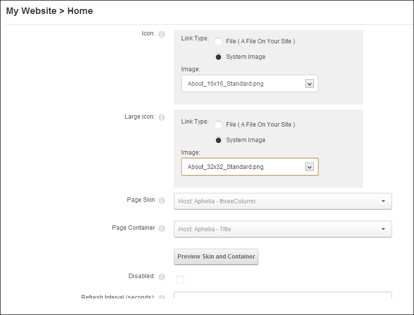
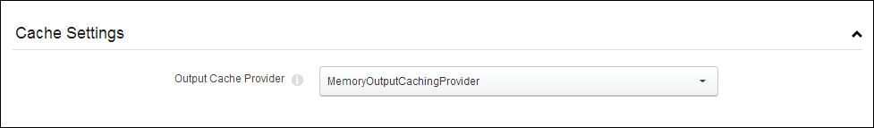

Advanced Settings for New Pages
An overview of the advanced settings for new pages. All advanced page settings are optional. This topic assumes you are in the process of adding a new page (See "Adding a New Page"). If you are editing an existing page See "Editing Page Settings" which has a few different fields for new pages.
- Select the Advanced Settings tab.
- Go to the Appearance section.
- At Icon/Link Type, select the image to be displayed beside the page name in the menu if the menu you are using shows Page icons. This image is also used as the Small Icon for any Console module relating to this page. Select the location of the required icon from these options:
- File (A File On Your Site ), select to choose any image. See "Uploading and Linking to a File" .
- Set the link to an existing file (See "Setting a File Link") or a new file (See "Uploading and Linking to a File"). Note: You can remove the icon from this and the following field by selecting < None Specified > as the File Name when setting a file link.
- System Image: Select to choose an icon which is part of your DNN application. This displays a list of available images.
- Select the required image.
- At Large Icon, using the same steps as for the above field, select an image to be used as the Large Icon for any Console module relating to this page.
- At Page Skin, select a skin from the drop down list. The default option of < None Specified > uses whichever skin is set as the default for this site. See "Setting the Default Site Skin and Container"
- At Page Container, select a container from the drop down list. Note: The default option of < None Specified > uses the skin is set as the default for this site.
- In the Page Stylesheet text box, enter the name of the stylesheet to be used for this page only. Stylesheets must be uploaded to the site's Digital Asset Management module (Admin > File Management).
- Click the Preview Skin and Container button to view the combination of the styles selected at the above three fields.
- In the Refresh Internal (seconds) text box, enter the interval to wait between automatic page refreshes. (E.g. Enter "60" for 1 minute or 60 seconds.) Leave field blank to disable.
- In the Page Header Tags text box, enter any tags that should be rendered in the "HEAD" tag of the HTML for this page.

- Expand the Cache Settings section.
- At Output Cache Provider, select the provider to use for this page from these options:
- FileOutputCachingProvider: Choose this option to save cached items to a file system. This option is suitable for a shared hosting environment.
- DatabaseOutputCachingProvider: Choose this option to save cached items to the database.
- MemoryOutputCachingProvider: This is the fastest caching method. Select this option if you have web site has a large amount of RAM allocated. This is typically not suitable for a shared hosting environment.

- Expand the Other Settings section.
- At Secure? to force this page to use a secure connection or secure socket layer (SSL). This option requires the Administrator to configure the SSL Settings on the Admin > Site Settings page.
- At Allow Indexing, if the page should be indexed by search crawlers using the INDEX/NOINDEX values for ROBOTS meta tag - OR - to disable.
- At Site Map Priority, enter the desired priority (between 0 and 1.0). This helps determine how this page is ranked in Google with respect to other pages on your site. The default setting is 0.5.
- At Start Date, click the Calendar
 button and select the first date the page is viewable.
button and select the first date the page is viewable. - At End Date, click the Calendar button and select the last date the page is viewable. Note: Expired pages can be viewed by Administrators via the Admin > Pages page.
- At Link URL, to set this page to be a navigation link to another resource (rather than displaying the page itself), select or add the link here. See "About the Link Control"

- Click the Add Page link.
-
See "Working with the Calendar"
-
See "About the Console Module"